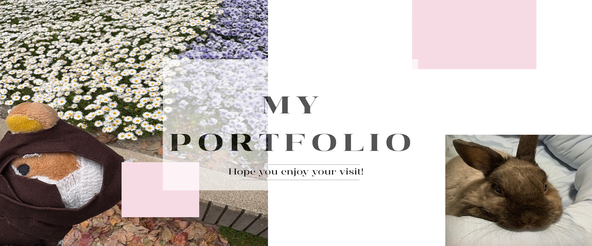

Loading

丁寧な構造を意識し、 誰が見ても分かりやすいコードを書くことを心がけています。
デザインの雰囲気や余白のバランスを大切にし、 見る人にとって心地よいレイアウトを意識しています。
基本的なDOM操作やイベント処理を実装できます。 ユーザーにとって自然で使いやすいUIを目指し、継続して学習中です。
HTML・CSSの基礎理解を目的に制作したWebサイトです。 指示書の内容を正確に読み取り、デザインやレイアウトを忠実に再現しました。
JavaScriptを用いて制作した作品です。 基本的なDOM操作やローカルストレージを活用し、 動きのあるWebページを実装しました。
自身をテーマに制作したWebサイトです。 配色やフォント選びにこだわり、 自分らしさが伝わるデザインを意識しました。

JavaScriptを用いて制作したToDoリストアプリです。 タスクの追加・削除機能を実装し、 配列操作やイベント処理の理解を深めました。